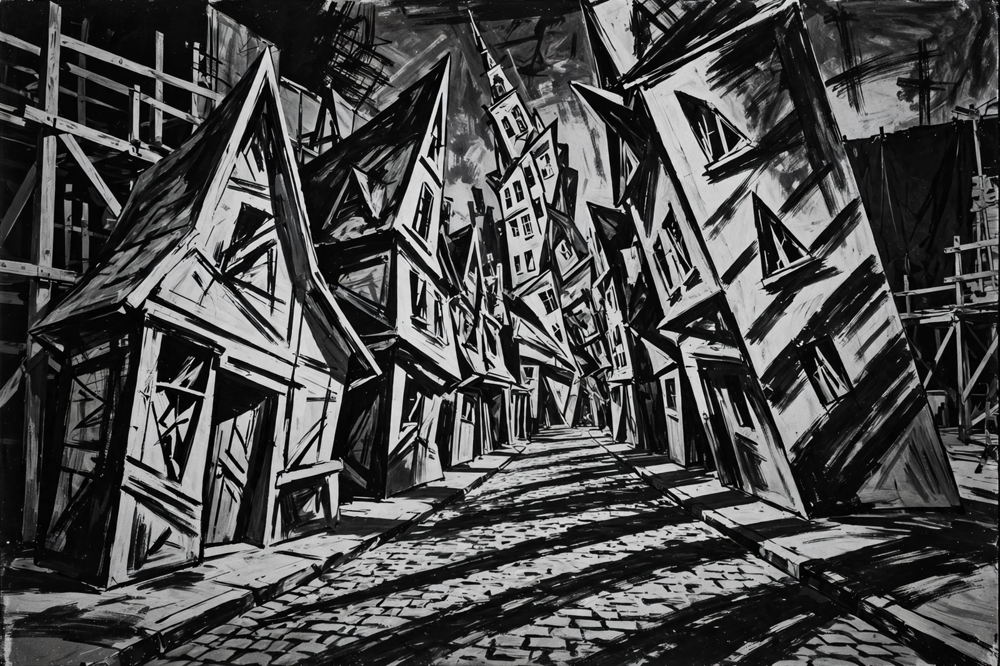

| German Expressionism | |
|---|---|
 Expressionist film-set design: distorted perspectives and painted shadows | |
| Years active | c. 1919–1933 (cinema); c. 1905–1930s (art) |
| Country | Germany |
| Key films | The Cabinet of Dr. Caligari (1920); Nosferatu (1922); Metropolis (1927) |
| Art groups | Die Brücke; Der Blaue Reiter |
German Expressionism was a German artistic movement that emerged in the early 20th century, first in painting and poetry and most famously in the cinema of the Weimar Republic. Rejecting naturalism, Expressionists sought to present the world from a subjective perspective, distorting it radically for emotional effect in order to evoke moods and ideas. In film, the movement flourished from about 1919 to 1933 and produced some of the most influential works in cinema history.
German Expressionist films used stylised, geometrically absurd sets with sharp points, oblique angles, painted shadows and chiaroscuro lighting, reflecting a world warped by anxiety in the aftermath of the First World War and hyperinflation. Foundational works include Robert Wiene's The Cabinet of Dr. Caligari (1920), Paul Wegener's The Golem (1920), F. W. Murnau's Nosferatu (1922) and The Last Laugh (1924), Fritz Lang's Dr. Mabuse the Gambler (1922) and Metropolis (1927). Themes of madness, betrayal, doubles and authoritarian hypnosis recur; Siegfried Kracauer's From Caligari to Hitler (1947) controversially read the films as prefiguring Nazism — a connection echoed in studies of state power such as film noir's own debt to the style.
As the Nazis came to power, many Expressionist filmmakers emigrated to Hollywood, where their lighting and design techniques shaped horror films and film noir — the genre later re-imported to France and championed by the critics of Cahiers du Cinéma. In painting, the movement spanned groups such as Die Brücke (founded 1905, including Ernst Ludwig Kirchner) and Der Blaue Reiter (Wassily Kandinsky, Franz Marc), extending into the New Objectivity of the 1920s.